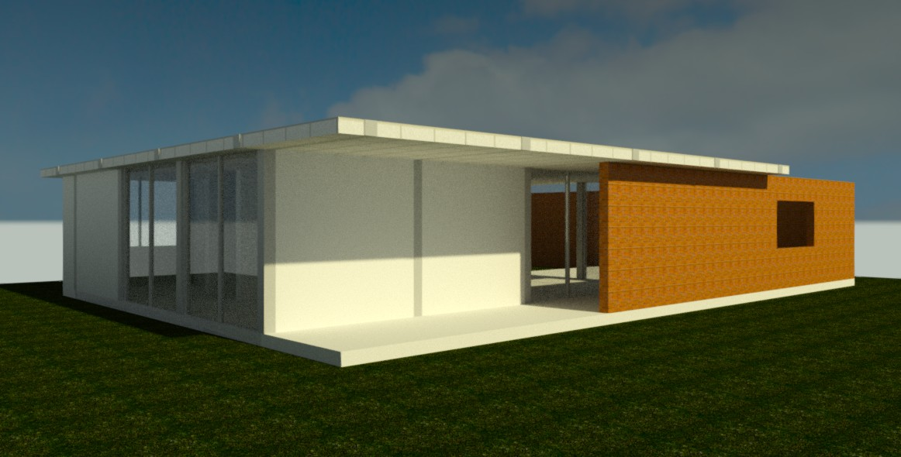

Vivienda Unifamiliar · 2022
Trabajo académico desarrollado en la UNLP. Análisis, propuesta y documentación técnica.
Proyecto de vivienda unifamiliar enfocado en la relación entre espacio interior y exterior, resolviendo implantación, programa y materialidad.